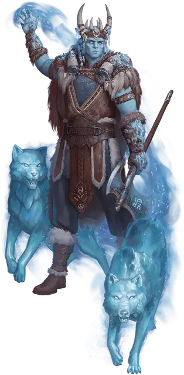

Ледяной великан ваятель льда
Frost Giant Ice Shaper
Огромный Великан (Жрец), любое мировоззрение

Класс Доспеха 16 (кольчуга)
Хиты 310 (27к12 + 135)
Скорость 40 футов
| мод | спас | ||
|---|---|---|---|
| СИЛ | 23 | +6 | +12 |
| ЛОВ | 10 | +0 | +0 |
| ТЕЛ | 21 | +5 | +11 |
| мод | спас | ||
|---|---|---|---|
| ИНТ | 11 | +0 | +0 |
| МДР | 19 | +4 | +10 |
| ХАР | 16 | +3 | +9 |
Навыки Атлетика +12, Восприятие +10
Иммунитет к урону холод
Чувства пассивное Восприятие 20
Языки Общий, Великаний
Опасность 17 (18000 опыта)
Бонус мастерства +6
Особенности
Морозная руна. У великана есть Морозная руна, начертанная на куске льда или каком-либо другом предмете, находящемся в его распоряжении. Держа в руках или надевая предмет с руной, великан может использовать действие Ледяные волки и реакцию Ледяной доспех.
Предмет, на котором нанесена руна, имеет КД 16; 40 хитов; и обладает иммунитетом к урону некротической и психической энергией, а так же урону ядом. Предмет восстанавливает все свои хиты в конце каждого хода, но обращается в пыль, если ее хиты уменьшаются до 0 или когда великан умирает. Если руна уничтожена, великан может начертать Морозную руну на предмете, находящимся в его распоряжении, после окончания короткого или продолжительного отдыха.
Легендарное сопротивление (3/день). Если великан проваливает спасбросок, она может вместо этого сделать спасбросок успешным.
Действия
Мультиатака. Великан совершает три атаки Секирой, Замораживающим лучом или их комбинацией.
Секира. . Рукопашная атака оружием: +12 к попаданию, досягаемость 10 футов, одна цель. Попадание: 22 (3к10 + 6) рубящего урона плюс 9 (2к8) урона холодом.
Замораживающий луч. Дальнобойная атака заклинанием: +10 к попаданию, дистанция 120 футов, одна цель. Попадание: 17 (3к8 + 4) урона холодом, и цель должна совершить спасбросок Телосложения Сл 18. В случае провала цель становится опутанной до конца своего следующего хода. В случае успеха скорость цели уменьшается на 10 футов до конца её следующего хода.
Ледяные волки (требуется Морозная руна). Великан магическим образом призывает 1к4 волков, сделанных изо льда (используйте блок статистики полярного волка [winter wolf] из "Бестиария", но это Элементали, а не Монстры). Волки появляются в незанятых пространствах, которые великан может видеть в пределах 30 футов от себя. Волки ходят сразу после великана по той же инициативе и подчиняются командам великана. Волки получают бонус +6 к своим броскам атаки и урона, находясь в пределах 30 футов от великана. Волки исчезают через 1 минуту, когда великан умирает или когда великан использует это действие снова.
Реакции
Ледяной доспех (требуется Морозная руна). Когда существо, которое видит великан, совершает по нему бросок атаки, великан может сформировать вокруг себя слой льда, дающий ему бонус +6 к КД против этой атаки. После попадания или промаха атаки лед разбивается вдребезги, и все существа в пределах 5 футов от великана должны совершить спасбросок Ловкости Сл 18, иначе получат 13 (3к8) урона холодом.
Описание
Ледяные великаны, владеющие рунической магией, известны как ваятели льда, а их огромная сила, как правило, способствует стремительному росту ранга великана. Многие из них в конечном итоге становятся ярлами, возглавляя свои кланы, или советниками ярлов — часто истинной власти, стоящей за троном. Обычно они служат Триму.
Верные своему имени, эти ваятели льда манипулируют сырой элементальной энергией воздуха и воды, чтобы использовать лед как в нападении, так и в защите. Они призывают ледяных элементалей в облике волков, облачаются в ледяные доспехи и так же быстро превращают этот доспех в град смертоносных ледяных осколков.